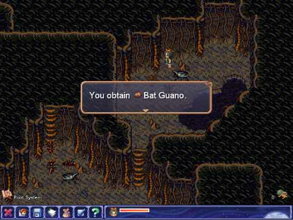
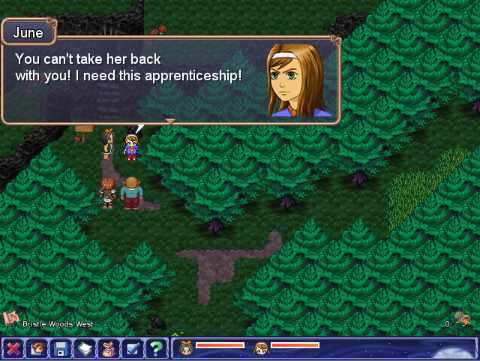
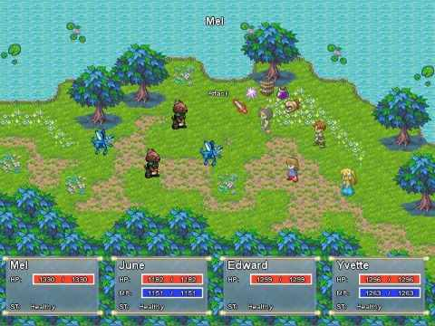

Mel's wedding day isn't going according to plan. Her worst enemy has stolen her man, and a mysterious ghost has appeared to inform Mel that her evil ancestor, Mordred Darkthrop, has passed down his most precious possession to her: a magical orb with the power of death.Wanting nothing to do with her wicked ancestor, Mel must now seek out the orb and destroy it, before someone else with the power to use it discovers its location.
Begin your amazing adventure in Aveyond: The Lost Orb, or continue the journey you started in Aveyond: Lord of Twilight and Aveyond: Gates of Night.
The Lost Orb is part 3 of the Orbs of Magic series.
(Also available for Windows and Mac)Need some help? Get the Official Strategy Guide!
Price: $8.99 $10.99
Category: Aveyond, RPG
Publisher: Aveyond Studios, RadialApps
 Download Size: 120MB
Download Size: 120MB Linux (Ubuntu 12.04+, Fedora etc.)
RAM: 1GB recommended
Hard Disk Space: 150MB
Discuss this game in the forum
|  |  |

|
 |
- Download the demo here.
- Place the downloaded file in your home directory. To make sure that the game supports all systems, we have created an install-free package.
- Right click the file and select "Extract Here".
- If you don't see such an option, you may alternatively go to the terminal and run:
- This will extract the contents of the package.
- Go to the directory and run the file "aveyond" by double clicking on it and choosing Run.
- If you cannot run the file, right click it and click properties. Check Allow executing file. Repeat this step for the files "engine-x86" and "engine-amd64" Alternatively, you may go to the directory in terminal and run the following command:
gunzip aveyond33demo.tar.gz
tar -xvf aveyond33demo.tar
chmod 777 aveyond engine*and then use
./aveyondto run the game.
Enjoy the game!
How to run the game?
Aveyond for Linux is completely DRM-free. Once you buy the game, you will be provided with a tar.gz file just like the demo. Follow the same instructions to run the game!
Please try out the trial demo before buying to be sure that your system supports the game.